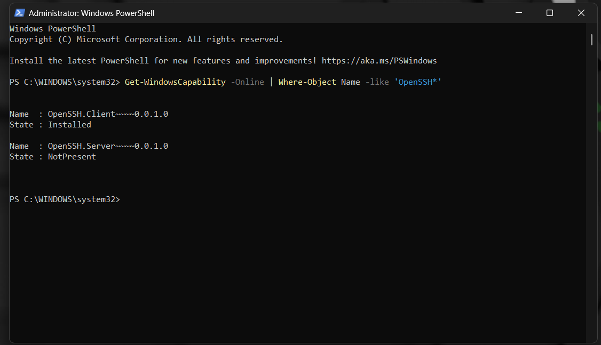
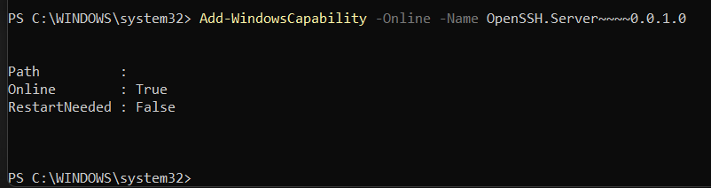
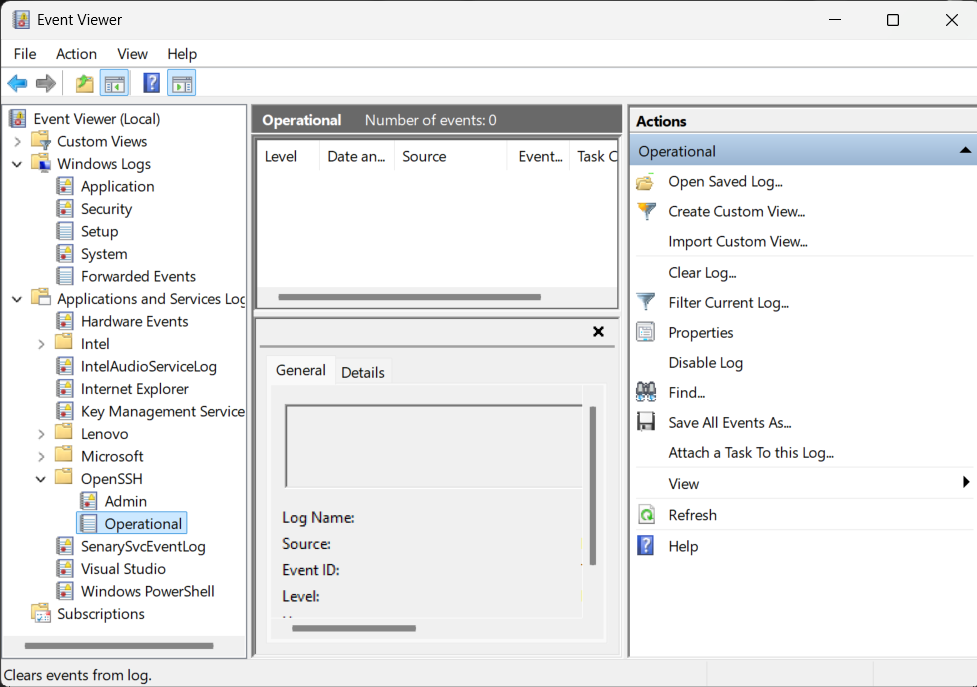
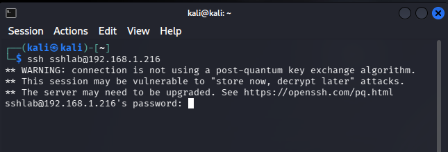
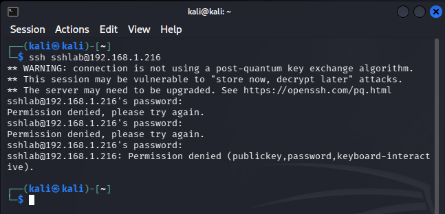
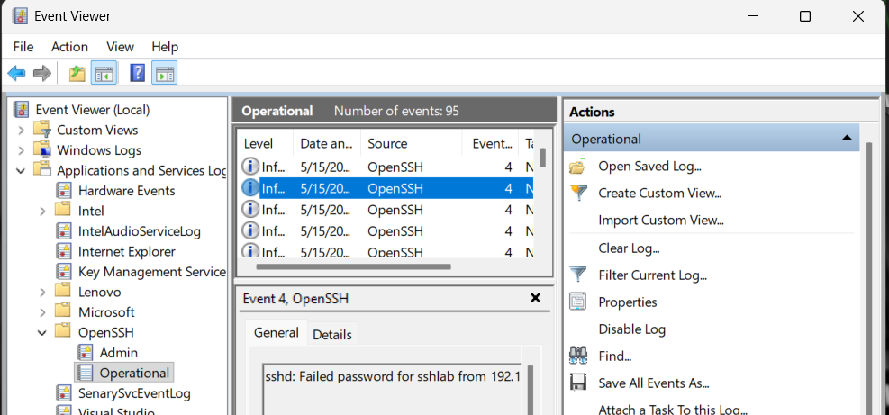
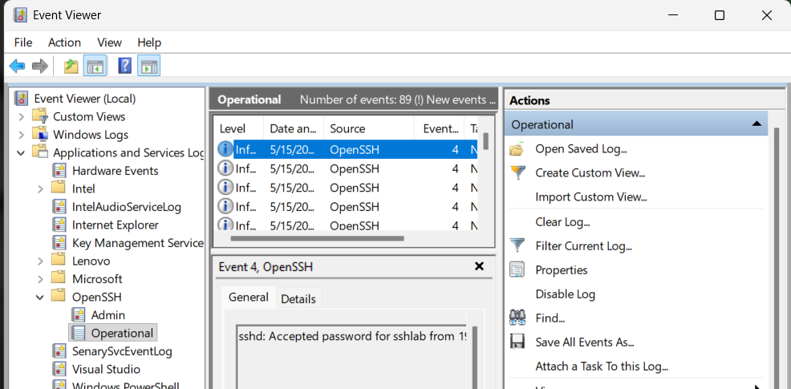
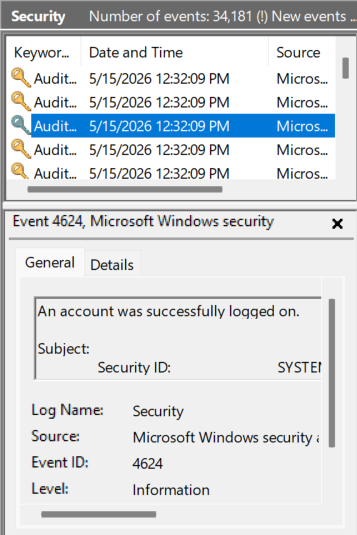
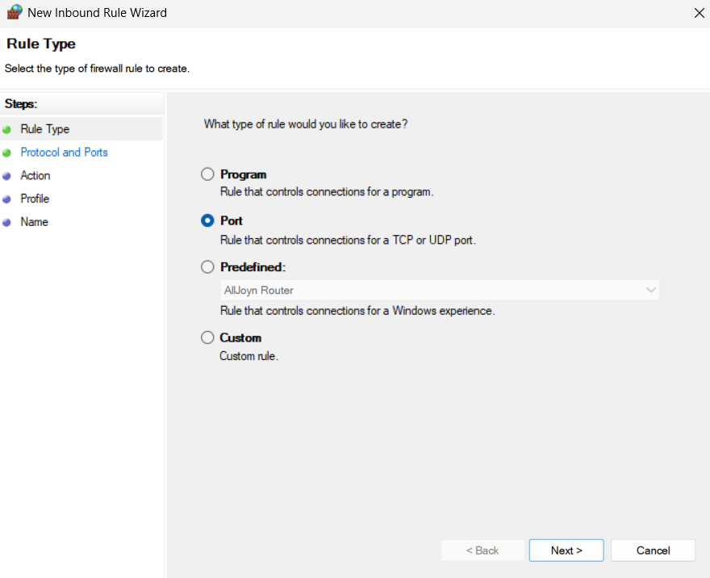

Securing Servers Using Honeypots and IP Blocking
This project walks through a full SOC-style workflow: deploying a Windows OpenSSH honeypot, simulating SSH attacks, detecting activity in logs, and mitigating by blocking the attacker IP with Windows Firewall.
1. Overview
Public-facing SSH services are common targets for brute-force and credential-stuffing attacks. In this lab, I deployed a Windows OpenSSH honeypot, generated SSH activity from a Kali attacker machine, validated logging for SIEM ingestion, and implemented mitigation using Windows Defender Firewall.
This exercise demonstrates:
- Deployment of a Windows OpenSSH honeypot
- Verification of SSH logging for SIEM ingestion
- Simulation of SSH connection attempts from Kali Linux
- Detection of attacker activity in Event Viewer logs
- Blocking the attacker IP using Windows Firewall
- Exporting logs for SIEM engineers
2. Installing OpenSSH Server on Windows
2.1 Verify OpenSSH availability
From an elevated PowerShell session, I first verified that the OpenSSH components were available:
Get-WindowsCapability -Online | Where-Object Name -like 'OpenSSH*'
The output showed the OpenSSH Client as Installed and the OpenSSH Server as NotPresent,
confirming that the server component still needed to be added.

2.2 Install OpenSSH Server
I installed the OpenSSH Server capability with:
Add-WindowsCapability -Online -Name OpenSSH.Server~~~~0.0.1.0
2.3 Start and enable the SSH service
After installation, I started the SSH daemon and configured it to start automatically:
Start-Service sshd
Set-Service -Name sshd -StartupType Automatic
2.4 Confirm service status
In services.msc, I verified that OpenSSH SSH Server was:
- Status: Running
- Startup Type: Automatic

3. Configure and verify logging
By default, Windows OpenSSH logs to Event Viewer under the OpenSSH channel.
3.1 Ensure DefaultShell registry key exists
To ensure proper shell behavior and logging, I created the DefaultShell registry value:
New-ItemProperty -Path "HKLM:\SOFTWARE\OpenSSH" `
-Name "DefaultShell" `
-Value "C:\Windows\System32\WindowsPowerShell\v1.0\powershell.exe" `
-PropertyType String -Force3.2 Locate SSH logs in Event Viewer
I confirmed that SSH events were being written to:

- Event Viewer → Applications and Services Logs → OpenSSH → Operational
4. Simulate SSH attack from Kali
4.1 Successful SSH login
From the Kali attacker machine, I initiated an SSH connection to the honeypot:
ssh sshlab@192.168.1.216
When prompted, I entered the lab password:
P@ssw0rd123!
This resulted in a successful interactive PowerShell session on the Windows host, confirming that the honeypot was reachable and accepting credentials.

4.2 Failed SSH login attempts
I then repeated the SSH connection but intentionally entered incorrect passwords multiple times to simulate failed authentication attempts:
ssh sshlab@192.168.1.216
sshlab@192.168.1.216's password:
Permission denied, please try again.
...
sshlab@192.168.1.216: Permission denied (publickey, password, keyboard-interactive).
5. Detect the attack in Windows logs
5.1 Identify the source IP in OpenSSH logs
In Event Viewer under OpenSSH → Operational, I reviewed events generated during the successful and failed SSH attempts. I focused on:
- Event ID 4 – Login attempt (accepted or failed)
- Event ID 10 – Session opened (not consistently present on Windows)


The logs showed entries such as:
sshd: Accepted password for sshlab from <attacker-ip>
sshd: Failed password for sshlab from 192.168.1.216Windows OpenSSH successfully logged authentication attempts as Event ID 4. Event ID 10 (session opened) was not generated. This is a known limitation of the Windows OpenSSH logging subsystem on Windows 10/11, where session-start events are not consistently emitted even when an interactive shell is established.
5.2 Correlate with Security log events
In the Security log, I observed:
- Event ID 4624 – An account was successfully logged on
- Event ID 4625 – An account failed to log on


These events provided additional confirmation of successful and failed SSH authentication attempts tied to the
sshlab account.
5.3 Export logs for SIEM engineers
To support further analysis and SIEM ingestion, I exported the OpenSSH Operational log:
- Right-click OpenSSH → Operational → Save All Events As...
- Saved as
.evtxfor native Windows analysis (or.txtif needed)
6. Mitigation: Block the attacker IP
6.1 Open Windows Defender Firewall with Advanced Security
From PowerShell, I launched the advanced firewall console:
wf.msc
6.2 Create a new inbound rule for SSH
- Inbound Rules → New Rule...
- Select Port
- Protocol: TCP, Specific local ports: 22
- Action: Block the connection
- Apply to: Domain, Private, and Public profiles
- Name the rule: Block SSH from <Attacker-IP>



6.3 Scope the rule to the attacker IP
To avoid blocking all SSH traffic, I scoped the rule to only the attacker’s IP address:
- Right-click the rule → Properties → Scope
- Under Remote IP address, select These IP addresses
- Add the attacker IP, e.g.
192.168.1.216


7. Demonstrate the rule in action
Finally, from the Kali attacker machine, I attempted to SSH into the honeypot again:
ssh sshlab@192.168.1.216
ssh: connect to host 192.168.1.216 port 22: Connection timed outThe connection timeout confirmed that the firewall rule was effectively blocking SSH traffic from the attacker IP while the service remained running on the Windows host.

8. Final summary
This project demonstrates a realistic SOC workflow around securing SSH services exposed to untrusted networks. Starting from a default Windows installation, I:
- Installed and configured a Windows OpenSSH honeypot
- Verified SSH logging for potential SIEM ingestion
- Simulated both successful and failed SSH logins from a Kali attacker machine
- Identified attacker activity and source IP in Event Viewer (OpenSSH and Security logs)
- Implemented mitigation using Windows Defender Firewall with an IP-scoped inbound rule
- Validated that further SSH attempts from the attacker IP were blocked
This mirrors real-world SOC processes: Hardening → Detection → Investigation → Response → Documentation. It also highlights the importance of log visibility, IP-based controls, and repeatable runbooks for handling authentication-based attacks against exposed services.